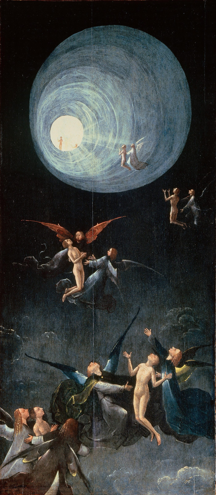

もくじ
いま書いてあるものの一覧です。
計算するもの：月星座を調べる
 ascension / 5Dアセンション「アセンション症状」と検索した。骨まで疲れている。動悸がする。友人が急にいなくなった。理由の分からない悲しみがある。この分野では、それを何だと説明し、何をすればよいと言っているのか。「地球が5次元へ移る」という話はどこから来たのか。英語圏の「31のサイン」、日本語の「24の現象」と「ゆっくり解説」、長く教えてきた著者の「特別なものにしない」という言葉。そして、同じ経験に精神医学がつけている名前。
ascension / 5Dアセンション「アセンション症状」と検索した。骨まで疲れている。動悸がする。友人が急にいなくなった。理由の分からない悲しみがある。この分野では、それを何だと説明し、何をすればよいと言っているのか。「地球が5次元へ移る」という話はどこから来たのか。英語圏の「31のサイン」、日本語の「24の現象」と「ゆっくり解説」、長く教えてきた著者の「特別なものにしない」という言葉。そして、同じ経験に精神医学がつけている名前。 ascendant / rising signアセンダント自分の星座の説明が、どうも自分に合わない。初対面の人から見た自分と、自分で思う自分が違う。占星術がそこに与えている名前が、アセンダント。太陽・月とあわせて「ビッグスリー」と呼ばれる3つ目。出生時刻が要る理由も。
ascendant / rising signアセンダント自分の星座の説明が、どうも自分に合わない。初対面の人から見た自分と、自分で思う自分が違う。占星術がそこに与えている名前が、アセンダント。太陽・月とあわせて「ビッグスリー」と呼ばれる3つ目。出生時刻が要る理由も。 overactive mind / monkey mindモンキーマインド考えが止まらない。夜中に目が覚めて、頭が回りはじめる。瞑想しようとしても、五分ともたない。「頭を静めなさい」と言われるけれど、どうすれば。この分野で名前の知られた人が、四年の隠遁生活のあとに街の暮らしで見つけた四つの方法と、「さまよう心」について脳科学が調べてきたこと。「心猿」という古い言葉も。
overactive mind / monkey mindモンキーマインド考えが止まらない。夜中に目が覚めて、頭が回りはじめる。瞑想しようとしても、五分ともたない。「頭を静めなさい」と言われるけれど、どうすれば。この分野で名前の知られた人が、四年の隠遁生活のあとに街の暮らしで見つけた四つの方法と、「さまよう心」について脳科学が調べてきたこと。「心猿」という古い言葉も。 affirmationsアファメーション「私は豊かだ」「私は愛されている」と毎朝唱えている。でも、唱えるたびに、嘘をついている気がする。効いているのか、逆効果なのか。この分野で「これを先に身につけないと効かない」と言われている一つのこつと、38の言葉。この言葉の来歴（1910年、1984年）、日本語の「言霊」、そして心理学が2009年に見つけた「効く人と、逆効果になる人」の違い。
affirmationsアファメーション「私は豊かだ」「私は愛されている」と毎朝唱えている。でも、唱えるたびに、嘘をついている気がする。効いているのか、逆効果なのか。この分野で「これを先に身につけないと効かない」と言われている一つのこつと、38の言葉。この言葉の来歴（1910年、1984年）、日本語の「言霊」、そして心理学が2009年に見つけた「効く人と、逆効果になる人」の違い。 toxic peopleトキシックな人会うたびに、消耗する。二十分お茶をしただけで、空っぽになる。でも、親だから、同僚だから、子どもの父親だから、縁を切れない。この分野では、「切って終わり」とは言われず、三つの手順が挙げられています。日本語の「モラハラ」という言葉の来歴と、「境界線」について心理学の側が言っていることも。
toxic peopleトキシックな人会うたびに、消耗する。二十分お茶をしただけで、空っぽになる。でも、親だから、同僚だから、子どもの父親だから、縁を切れない。この分野では、「切って終わり」とは言われず、三つの手順が挙げられています。日本語の「モラハラ」という言葉の来歴と、「境界線」について心理学の側が言っていることも。 how to pray祈り方宗教は持っていない。でも、祈りたいときがある。誰に、どう言えばいいのか。手を合わせるだけでいいのか。この分野で語られている「宗教の祈りとの違い」と、四つの手順。日本語の「祈り」の広さ——神棚から包丁塚まで——と、「祈りは効くのか」を1872年から調べてきた研究の側が言っていること。
how to pray祈り方宗教は持っていない。でも、祈りたいときがある。誰に、どう言えばいいのか。手を合わせるだけでいいのか。この分野で語られている「宗教の祈りとの違い」と、四つの手順。日本語の「祈り」の広さ——神棚から包丁塚まで——と、「祈りは効くのか」を1872年から調べてきた研究の側が言っていること。 inner childインナーチャイルド恋愛になると、急に子どもに戻ってしまう。人が離れていくのが怖い。安心できたことがない。自分のなかの「子ども」が傷ついているのか、どう確かめ、どう向き合えばよいと言われているか。英語圏の解説、日本語の精神科医・誘導瞑想・カウンセラーの三つの立場、心理療法の側の扱い、この言葉の来歴。
inner childインナーチャイルド恋愛になると、急に子どもに戻ってしまう。人が離れていくのが怖い。安心できたことがない。自分のなかの「子ども」が傷ついているのか、どう確かめ、どう向き合えばよいと言われているか。英語圏の解説、日本語の精神科医・誘導瞑想・カウンセラーの三つの立場、心理療法の側の扱い、この言葉の来歴。 receiving blocks受け取れないほめられると、否定してしまう。贈り物を、素直に受け取れない。願っているはずのものが、いざ来そうになると、なぜか自分で遠ざけてしまう。この分野では、その仕組みが「鎧」という言葉で説明され、六つの方法が挙げられています。そのなかの「タッピング」について、研究の側が言っていることも。
receiving blocks受け取れないほめられると、否定してしまう。贈り物を、素直に受け取れない。願っているはずのものが、いざ来そうになると、なぜか自分で遠ざけてしまう。この分野では、その仕組みが「鎧」という言葉で説明され、六つの方法が挙げられています。そのなかの「タッピング」について、研究の側が言っていることも。 reincarnation / rebirth輪廻転生死んだら、どうなるのか。亡くなった人は、いまどこにいるのか。自分は前にも生きていたのか。だとしたら、なぜ覚えていないのか。この分野で「輪」として説明されている六つの段階と、日本語の「輪廻」「中陰」「四十九日」に、同じ形があること。
reincarnation / rebirth輪廻転生死んだら、どうなるのか。亡くなった人は、いまどこにいるのか。自分は前にも生きていたのか。だとしたら、なぜ覚えていないのか。この分野で「輪」として説明されている六つの段階と、日本語の「輪廻」「中陰」「四十九日」に、同じ形があること。 egoエゴ「エゴと闘うのに疲れました。この戦争にどうやって勝てばいいのですか」。エゴとは何だと言われているのか、なぜ「敵と見ること」が罠だと言われるのか、代わりに何をすればよいと言われているのか。「エゴ」という言葉がフロイトから来た経緯、仏教の「我執」と「煩悩即菩提」、そして心の「部分」を敵にしない心理療法の側の言葉。
egoエゴ「エゴと闘うのに疲れました。この戦争にどうやって勝てばいいのですか」。エゴとは何だと言われているのか、なぜ「敵と見ること」が罠だと言われるのか、代わりに何をすればよいと言われているのか。「エゴ」という言葉がフロイトから来た経緯、仏教の「我執」と「煩悩即菩提」、そして心の「部分」を敵にしない心理療法の側の言葉。 angel numbersエンジェルナンバー時計を見ると11:11。車のナンバーが444。同じ数字ばかり目に入る。これは何かの合図なのか。何をすればいいのか。そして、この考え方を作った本人が、後年それを離れたという事実について。
angel numbersエンジェルナンバー時計を見ると11:11。車のナンバーが444。同じ数字ばかり目に入る。これは何かの合図なのか。何をすればいいのか。そして、この考え方を作った本人が、後年それを離れたという事実について。 empathエンパス人混みで消耗する。相手の不機嫌が自分に移る。断れない。ひとりでいたい。自分は弱いのだろうか。それぞれの悩みに、この分野で何と言われているか。日本語の動画での「10の質問」の診断と、HSPとの線の引き方。
empathエンパス人混みで消耗する。相手の不機嫌が自分に移る。断れない。ひとりでいたい。自分は弱いのだろうか。それぞれの悩みに、この分野で何と言われているか。日本語の動画での「10の質問」の診断と、HSPとの線の引き方。 auraオーラ「あなたのオーラは青です」と言われた。自分には見えない。「オーラが弱い」と言われて不安になった。オーラとは何だと言われていて、どこから来た言葉で、写真に写るのか、見える人はいるのか。この分野で「感情体」について語られていること、英語圏と日本語の「オーラの見方」の練習がどこまで同じか、日本に大正時代に入ってきた経緯も。
auraオーラ「あなたのオーラは青です」と言われた。自分には見えない。「オーラが弱い」と言われて不安になった。オーラとは何だと言われていて、どこから来た言葉で、写真に写るのか、見える人はいるのか。この分野で「感情体」について語られていること、英語圏と日本語の「オーラの見方」の練習がどこまで同じか、日本に大正時代に入ってきた経緯も。 spiritual awakening覚醒自分がおかしくなったのではないか。まわりの人が分からなくなった。体がつらい。昔のことばかり思い出す。家族に理解されない。それぞれの悩みに、この分野で何と言われているか。世界のシャーマンに共通する経路を語る講演、「頭のなかの声に気づく」という静かな描き方、日本語の「前兆サイン」「覚醒度チェック」の動画、そして精神医学の側の言葉。
spiritual awakening覚醒自分がおかしくなったのではないか。まわりの人が分からなくなった。体がつらい。昔のことばかり思い出す。家族に理解されない。それぞれの悩みに、この分野で何と言われているか。世界のシャーマンに共通する経路を語る講演、「頭のなかの声に気づく」という静かな描き方、日本語の「前兆サイン」「覚醒度チェック」の動画、そして精神医学の側の言葉。 shadow workシャドーワーク人の嫌なところが気になって仕方ない。同じ失敗を繰り返す。急に怒りが噴き出す。自分を責めてしまう。そうした「自分の見たくない部分」とどう向き合えばよいと言われているか。
shadow workシャドーワーク人の嫌なところが気になって仕方ない。同じ失敗を繰り返す。急に怒りが噴き出す。自分を責めてしまう。そうした「自分の見たくない部分」とどう向き合えばよいと言われているか。 kundalini awakeningクンダリーニ瞑想中に、背骨の下から熱が上がってきた。体が勝手に波打って、止められなかった。それ以来、眠れず、時間の感覚が変わり、感情が突然あふれる。検索すると「クンダリーニ覚醒」という言葉が出てくる。この分野で名前の知られた人が語る自分自身の激しい経験、七つの思い違い、七つの方法。千年以上前のインドの言葉がどう西洋に来たか、精神医学が「クンダリーニ症候群」と呼んでいるもの。
kundalini awakeningクンダリーニ瞑想中に、背骨の下から熱が上がってきた。体が勝手に波打って、止められなかった。それ以来、眠れず、時間の感覚が変わり、感情が突然あふれる。検索すると「クンダリーニ覚醒」という言葉が出てくる。この分野で名前の知られた人が語る自分自身の激しい経験、七つの思い違い、七つの方法。千年以上前のインドの言葉がどう西洋に来たか、精神医学が「クンダリーニ症候群」と呼んでいるもの。 grounding / earthingグラウンディング「グラウンディングが足りない」と言われた。頭ばかり働いて、体がここにない感じがする。ふわふわして、疲れているのに眠れない。この分野で勧められている方法、「アーシング」という言葉の来歴とその評価、そして森と裸足について研究の側が言っていること。
grounding / earthingグラウンディング「グラウンディングが足りない」と言われた。頭ばかり働いて、体がここにない感じがする。ふわふわして、疲れているのに眠れない。この分野で勧められている方法、「アーシング」という言葉の来歴とその評価、そして森と裸足について研究の側が言っていること。 how to open your heartハートを開く人生が、灰色に見える。誰かと付き合っていても、ある距離から先へ、人を入れられない。「心が閉じている」と言われたが、開くとは何をすることなのか。この分野で言われている、閉じているしるし、閉じた理由、開くための四つの手順と三つの練習。「鏡に向かって『愛している』と言う」という練習の来歴と、「自分に優しくすること」を研究してきた心理学の側の言葉。
how to open your heartハートを開く人生が、灰色に見える。誰かと付き合っていても、ある距離から先へ、人を入れられない。「心が閉じている」と言われたが、開くとは何をすることなのか。この分野で言われている、閉じているしるし、閉じた理由、開くための四つの手順と三つの練習。「鏡に向かって『愛している』と言う」という練習の来歴と、「自分に優しくすること」を研究してきた心理学の側の言葉。 Saturn returnサターンリターン27歳から30歳ごろ、なぜか人生が急に重くなる。仕事も、関係も、住む場所も、いっぺんに問われる気がする。占星術がこの時期に与えている名前と、心理学が同じ時期に与えている名前。
Saturn returnサターンリターン27歳から30歳ごろ、なぜか人生が急に重くなる。仕事も、関係も、住む場所も、いっぺんに問われる気がする。占星術がこの時期に与えている名前と、心理学が同じ時期に与えている名前。 guardian spirit守護霊自分にも守護霊はいるのか。守られている人には特徴があるのか。いまの生活を見て、怒っていないか。どこから、どう見ているのか。日本語の動画でいちばん多く聞かれるこの問いに、僧侶、沖縄のユタ、霊視をする人がそれぞれ何と答えているか。「守護霊」という言葉が大正時代に作られた経緯、それより前からある「祖霊」の考え方、亡くなった人との絆を研究する心理学の言葉、そして「先祖の因縁」で不安をあおる商法への注意。
guardian spirit守護霊自分にも守護霊はいるのか。守られている人には特徴があるのか。いまの生活を見て、怒っていないか。どこから、どう見ているのか。日本語の動画でいちばん多く聞かれるこの問いに、僧侶、沖縄のユタ、霊視をする人がそれぞれ何と答えているか。「守護霊」という言葉が大正時代に作られた経緯、それより前からある「祖霊」の考え方、亡くなった人との絆を研究する心理学の言葉、そして「先祖の因縁」で不安をあおる商法への注意。 synchronicityシンクロニシティ時計を見ると11:11。思い浮かべた人から連絡が来る。「宇宙が何か言っている気がするけれど、何を言っているのか分からない」。この言葉を作ったユングの話と、この分野で「何のために起きて、どう扱えばよいか」がどう説明されているか、そして統計と心理学の側の見方。英語圏の「五つの型」、神経科学者の体験談、日本語の著述家と解説動画が語る「シンクロ」も。
synchronicityシンクロニシティ時計を見ると11:11。思い浮かべた人から連絡が来る。「宇宙が何か言っている気がするけれど、何を言っているのか分からない」。この言葉を作ったユングの話と、この分野で「何のために起きて、どう扱えばよいか」がどう説明されているか、そして統計と心理学の側の見方。英語圏の「五つの型」、神経科学者の体験談、日本語の著述家と解説動画が語る「シンクロ」も。 ego death / loss of identityエゴデス鏡を見て、映っている顔が自分だと思えなかった。好きだったものが嫌いになり、着る服も決められない。家族に「前のあなたに戻って」と言われる。この分野で「エゴの死」と呼ばれ、六つの症状と二つの方法が挙げられているもの。心理学が「エゴの死」「アイデンティティの危機」と呼んできたものと、この経験を「象徴的な死」と書いた精神科医のこと。
ego death / loss of identityエゴデス鏡を見て、映っている顔が自分だと思えなかった。好きだったものが嫌いになり、着る服も決められない。家族に「前のあなたに戻って」と言われる。この分野で「エゴの死」と呼ばれ、六つの症状と二つの方法が挙げられているもの。心理学が「エゴの死」「アイデンティティの危機」と呼んできたものと、この経験を「象徴的な死」と書いた精神科医のこと。 psychic attack / energy protectionサイキックアタック職場の誰かの「気」にやられる。夜中に、何かに押さえつけられて動けない。「生霊を飛ばされている」と言われた。守るには、塩か、水晶か、お守りか。この分野には、かつて自分も守っていたと語ったうえで、「守る必要はない」と言う人もいます。日本語の「生霊」の来歴と、「金縛り」について医学が言っていること、「思い込みで具合が悪くなる」ことの研究も。
psychic attack / energy protectionサイキックアタック職場の誰かの「気」にやられる。夜中に、何かに押さえつけられて動けない。「生霊を飛ばされている」と言われた。守るには、塩か、水晶か、お守りか。この分野には、かつて自分も守っていたと語ったうえで、「守る必要はない」と言う人もいます。日本語の「生霊」の来歴と、「金縛り」について医学が言っていること、「思い込みで具合が悪くなる」ことの研究も。 Mercury retrograde水星逆行連絡が行き違う。機械が壊れる。約束が流れる。そのたびに「水星逆行だから」と言われる。何が起きていて、何をすればよいと言われているのか。そして、逆行とは実際には何なのか。
Mercury retrograde水星逆行連絡が行き違う。機械が壊れる。約束が流れる。そのたびに「水星逆行だから」と言われる。何が起きていて、何をすればよいと言われているのか。そして、逆行とは実際には何なのか。 starseed / star peopleスターシードここが自分の居場所だと思えない。家族のなかでも、どこか浮いている。子どものころ、よく星空を見上げていた。この分野には、その感覚に「スターシード」という名前があります。何だと言われているのか、しるしは何か、どこから来た言葉なのか。そして「居場所がない」という感覚に心理学がつけている名前。
starseed / star peopleスターシードここが自分の居場所だと思えない。家族のなかでも、どこか浮いている。子どものころ、よく星空を見上げていた。この分野には、その感覚に「スターシード」という名前があります。何だと言われているのか、しるしは何か、どこから来た言葉なのか。そして「居場所がない」という感覚に心理学がつけている名前。 spirit animalスピリットアニマル自分のスピリットアニマルを知りたい。どう見つけると言われているのか。そして、この言葉は使っていいのか——北米先住民の人たちが、この言葉についてどう言っているか。
spirit animalスピリットアニマル自分のスピリットアニマルを知りたい。どう見つけると言われているのか。そして、この言葉は使っていいのか——北米先住民の人たちが、この言葉についてどう言っているか。 spirit guideスピリットガイド自分にもいるのか。つながりたいのに何も感じない。前は感じたのに、いなくなった気がする。それぞれの悩みに、この分野で何と言われているか。日本語の「守護霊」との関係も。
spirit guideスピリットガイド自分にもいるのか。つながりたいのに何も感じない。前は感じたのに、いなくなった気がする。それぞれの悩みに、この分野で何と言われているか。日本語の「守護霊」との関係も。 past lives / past life regression前世同じような恋愛を、相手を変えて繰り返している。理由のない恐怖がある。「前世のせい」と言われることがあるけれど、それはどういう仕組みだと語られていて、何をすればよいと言われているのか。前世療法の来歴と、心理学の側の見方、40年かけて子どもの証言を集めた精神科医のことも。
past lives / past life regression前世同じような恋愛を、相手を変えて繰り返している。理由のない恐怖がある。「前世のせい」と言われることがあるけれど、それはどういう仕組みだと語られていて、何をすればよいと言われているのか。前世療法の来歴と、心理学の側の見方、40年かけて子どもの証言を集めた精神科医のことも。 soul contract / karmic relationshipソウルコントラクト出会った瞬間に強く引かれたのに、一緒にいると力を失っていく。「この人とは魂の約束がある」と言われた。カルマの関係と魂の伴侶は、どう違うのか。この分野で言われている二種類の契約と、終わらせる四つの手順。プラトンの「生まれる前に自分の人生を選ぶ」話と、日本語の「業」「縁」も。
soul contract / karmic relationshipソウルコントラクト出会った瞬間に強く引かれたのに、一緒にいると力を失っていく。「この人とは魂の約束がある」と言われた。カルマの関係と魂の伴侶は、どう違うのか。この分野で言われている二種類の契約と、終わらせる四つの手順。プラトンの「生まれる前に自分の人生を選ぶ」話と、日本語の「業」「縁」も。 soulmate / soul familyソウルメイト初めて会ったのに、懐かしい。目を合わせると、言葉なしに何かが通じる。「この人は魂の家族だ」と感じた。ソウルメイトはひとりなのか、何人もいるのか。この分野で「ソウルファミリー」について語られている五つのしるしと、見つけるための四つの方法。「ソウルメイト」という言葉がプラトンから1822年の手紙を経て広まった来歴と、「運命の人はひとり」という信念について研究が言っていること。
soulmate / soul familyソウルメイト初めて会ったのに、懐かしい。目を合わせると、言葉なしに何かが通じる。「この人は魂の家族だ」と感じた。ソウルメイトはひとりなのか、何人もいるのか。この分野で「ソウルファミリー」について語られている五つのしるしと、見つけるための四つの方法。「ソウルメイト」という言葉がプラトンから1822年の手紙を経て広まった来歴と、「運命の人はひとり」という信念について研究が言っていること。 sun sign太陽星座朝のテレビの「今日の運勢」が当たらない。星座の説明が自分に合わない。誕生日だけで決まる「星座」とは、占星術のなかで何なのか。1930年の新聞に始まった経緯と、心理学が「当たる気がする」理由に与えている名前。
sun sign太陽星座朝のテレビの「今日の運勢」が当たらない。星座の説明が自分に合わない。誕生日だけで決まる「星座」とは、占星術のなかで何なのか。1930年の新聞に始まった経緯と、心理学が「当たる気がする」理由に与えている名前。 life purpose / soul missionライフパーパス自分が何のために生まれてきたのか、分からない。「使命を生きなさい」と言われるほど、焦る。このまま何も見つけないで終わるのが怖い。この分野では、「使命は探しに行くものではない」と言われ、四つの方法が挙げられています。日本語の「生きがい」の来歴と、強制収容所を生き延びた精神科医が「意味」について書いたことも。
life purpose / soul missionライフパーパス自分が何のために生まれてきたのか、分からない。「使命を生きなさい」と言われるほど、焦る。このまま何も見つけないで終わるのが怖い。この分野では、「使命は探しに行くものではない」と言われ、四つの方法が挙げられています。日本語の「生きがい」の来歴と、強制収容所を生き延びた精神科医が「意味」について書いたことも。 third eye / pineal glandサードアイ「第三の目を開く」と検索した。開くと何が起きるのか。開き方の動画のとおりに眉間に集中したら、額が痛くなった。危ないのか。この分野で「持ち上げすぎ」と呼ばれているものと、四つの手順と三つのしるし。「松果体」について医学が知っていること（メラトニン、退化した第三の目、デカルトの「魂の座」）。
third eye / pineal glandサードアイ「第三の目を開く」と検索した。開くと何が起きるのか。開き方の動画のとおりに眉間に集中したら、額が痛くなった。危ないのか。この分野で「持ち上げすぎ」と呼ばれているものと、四つの手順と三つのしるし。「松果体」について医学が知っていること（メラトニン、退化した第三の目、デカルトの「魂の座」）。 dark night of the soulダークナイト・オブ・ザ・ソウル世界が灰色に見える。何をしても意味が感じられない。信じていたものから切り離された気がする。これはいつまで続くのか。それぞれの悩みに、この分野で何と言われているか。英語圏の別の語り手と、日本語の二つの動画が、この時期をどう描いているか。
dark night of the soulダークナイト・オブ・ザ・ソウル世界が灰色に見える。何をしても意味が感じられない。信じていたものから切り離された気がする。これはいつまで続くのか。それぞれの悩みに、この分野で何と言われているか。英語圏の別の語り手と、日本語の二つの動画が、この時期をどう描いているか。 chakraチャクラ「第一チャクラが閉じている」と言われた。7つのチャクラと虹の色は、どこから来たのか。もとの伝統では何だったのか。日本語の「丹田」との関係。サンスクリット文献とヨガの側の説明、日本語の神社・ヨガ修行・医師を名乗る人の三つの語り方。そして、体の症状をチャクラで説明されたときに、知っておきたいこと。
chakraチャクラ「第一チャクラが閉じている」と言われた。7つのチャクラと虹の色は、どこから来たのか。もとの伝統では何だったのか。日本語の「丹田」との関係。サンスクリット文献とヨガの側の説明、日本語の神社・ヨガ修行・医師を名乗る人の三つの語り方。そして、体の症状をチャクラで説明されたときに、知っておきたいこと。 twin ray / twin flameツインレイあの人はそうなのか。どうすれば出会えるのか。離れてしまったときは。追いかけるのをやめられないときは。それぞれの悩みに、この分野で何と言われているか。日本語の動画で語られている「確定サイン」と「魂の鏡」という二つの語り方。
twin ray / twin flameツインレイあの人はそうなのか。どうすれば出会えるのか。離れてしまったときは。追いかけるのをやめられないときは。それぞれの悩みに、この分野で何と言われているか。日本語の動画で語られている「確定サイン」と「魂の鏡」という二つの語り方。 moon sign月星座生まれたときに月がどの星座にあったか。何を表すと言われているのか、自分のはどうやって知るのか、時刻が分からないときはどうするのか。
moon sign月星座生まれたときに月がどの星座にあったか。何を表すと言われているのか、自分のはどうやって知るのか、時刻が分からないときはどうするのか。 surrender / letting goサレンダー「手放したときに叶う」と言われるけれど、手放すとは何もしないことなのか。願って、思い描いて、がんばっているのに疲れてしまう。この分野ではどう答えられているのか。日本語にもとからある「他力」と、依存症の回復で使われてきた祈りも、隣に置きます。
surrender / letting goサレンダー「手放したときに叶う」と言われるけれど、手放すとは何もしないことなのか。願って、思い描いて、がんばっているのに疲れてしまう。この分野ではどう答えられているのか。日本語にもとからある「他力」と、依存症の回復で使われてきた祈りも、隣に置きます。 higher self / intuitionハイヤーセルフ「ハイヤーセルフにつながる」とは何をすることなのか。心の声と、ただの思考はどう見分けるのか。この言葉の由来（1889年の神智学）と、日本語の「真我」、心理学の「内受容感覚」もあわせて。英語圏の「未来の自分・監督」という説明、日本語の誘導瞑想・実業家の講話・芸人の雑談の三つの語り方も。
higher self / intuitionハイヤーセルフ「ハイヤーセルフにつながる」とは何をすることなのか。心の声と、ただの思考はどう見分けるのか。この言葉の由来（1889年の神智学）と、日本語の「真我」、心理学の「内受容感覚」もあわせて。英語圏の「未来の自分・監督」という説明、日本語の誘導瞑想・実業家の講話・芸人の雑談の三つの語り方も。 raise your vibration波動を上げる「波動が低い」と言われた。落ち込んでいる自分は、波動が低いのだろうか。悲しんではいけないのか。この分野では、「高い波動＝よい感情」という考えが「いちばん壊すべき思い違い」と呼ばれ、五つの手順が挙げられています。日本語で「波動」がこの意味で広まった経緯と、心理学が「感情を押し殺すこと」について調べてきたことも。
raise your vibration波動を上げる「波動が低い」と言われた。落ち込んでいる自分は、波動が低いのだろうか。悲しんではいけないのか。この分野では、「高い波動＝よい感情」という考えが「いちばん壊すべき思い違い」と呼ばれ、五つの手順が挙げられています。日本語で「波動」がこの意味で広まった経緯と、心理学が「感情を押し殺すこと」について調べてきたことも。 law of attraction / manifestation引き寄せの法則願っているのに、叶わない。何をすれば「引き寄せ」になるのか。悪いことが起きたのは自分の考えのせいなのか。それぞれの悩みに、この考え方を広めた人たちと、心理学者が何と言っているか。英語圏と日本語で最も見られている動画の話し手（講演家、都市伝説の語り手、作家、公認心理師）がそれぞれ何と言っているかも並べます。
law of attraction / manifestation引き寄せの法則願っているのに、叶わない。何をすれば「引き寄せ」になるのか。悪いことが起きたのは自分の考えのせいなのか。それぞれの悩みに、この考え方を広めた人たちと、心理学者が何と言っているか。英語圏と日本語で最も見られている動画の話し手（講演家、都市伝説の語り手、作家、公認心理師）がそれぞれ何と言っているかも並べます。 energy vampire / emotional contagionエナジーヴァンパイア人混みで疲れる。誰かと話したあと、理由もなく沈む。どこまでが自分の感情で、どこからが相手のものか分からない。この分野で教えられている「たったひとつの決まり」と、「エネルギーヴァンパイア」という言葉の来歴、心理学が同じ現象につけている名前。
energy vampire / emotional contagionエナジーヴァンパイア人混みで疲れる。誰かと話したあと、理由もなく沈む。どこまでが自分の感情で、どこからが相手のものか分からない。この分野で教えられている「たったひとつの決まり」と、「エネルギーヴァンパイア」という言葉の来歴、心理学が同じ現象につけている名前。 six stages of spiritual awakening目覚めの六つの段階世界が輝いて見えた時期が終わって、いまは何も感じない。導きが止まった。自分はどの辺りにいるのか。いつまで続くのか。この分野で語られている六つの段階と、それぞれのおおよその長さ、三つの通り抜け方。禅の「十牛図」に、八百年前から同じ形があること。
six stages of spiritual awakening目覚めの六つの段階世界が輝いて見えた時期が終わって、いまは何も感じない。導きが止まった。自分はどの辺りにいるのか。いつまで続くのか。この分野で語られている六つの段階と、それぞれのおおよその長さ、三つの通り抜け方。禅の「十牛図」に、八百年前から同じ形があること。 astral projection / out-of-body experienceアストラルトラベル眠りかけたとき、体から抜け出て、天井から自分を見下ろしていた。怖かった。戻れなくなるのではないか。あれは何だったのか。わざとできるのか。この分野で語られている「何のためにするのか」「危なくないのか」「五つの手順」と、体外離脱について研究の側が調べてきたこと（10人に1人が経験する、488の文化の89%に言い伝えがある）。
astral projection / out-of-body experienceアストラルトラベル眠りかけたとき、体から抜け出て、天井から自分を見下ろしていた。怖かった。戻れなくなるのではないか。あれは何だったのか。わざとできるのか。この分野で語られている「何のためにするのか」「危なくないのか」「五つの手順」と、体外離脱について研究の側が調べてきたこと（10人に1人が経験する、488の文化の89%に言い伝えがある）。
near-death experience臨死体験手術中に、天井から自分を見ていた。暗いトンネルの先に光があった。亡くなった祖母が立っていた。あれは何だったのか。死んだあとの世界を見たのか、脳が作った夢なのか。心停止から戻った人の4〜18%が報告する経験について、1975年から医師たちが調べてきたこと。日本人は三途の川とお花畑を見ること。そして、この分野で名前の知られた人が「死の過程」について語っていること。